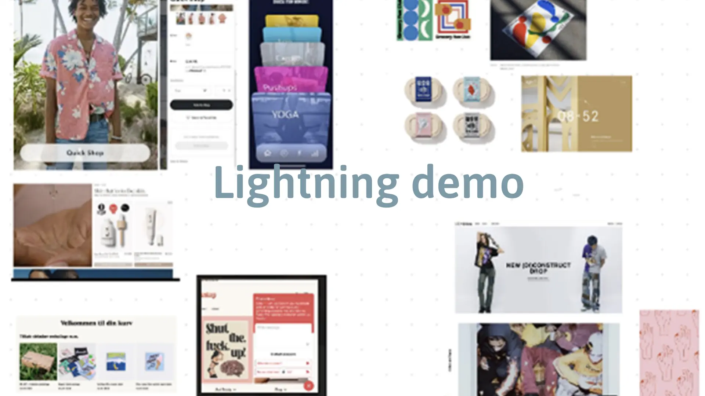
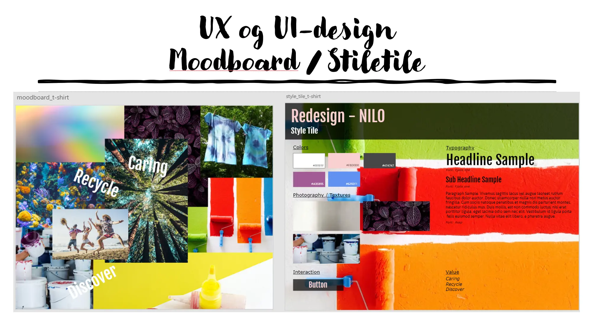

UX
I vores UX tema lærte jeg at anvende forskellige research metoder til at indsamle indsigter omkring folks
holdninger og præferencer, samt hvordan man designer en god brugeroplevelse i form af konventioner samt
designprincipper. Til sidst skulle vi øve hvordan det var at fremlægge vores resultater i form af en
pitch.
Webshop
Jeg startede med at definere et koncept, afsender, målgruppe samt UPS’er til webshoppen. Herefter lavede
jeg research i form af, desk research, observation, spørgeskema og interview på det valgte koncept.
Formålet med dette var at samle indsigter som skulle implementeres i designet af webshoppen, som skulle
produceres i XD. Konceptet jeg havde valgt var t-shirts med naturprint for at fokusere på at genbruge
t-shirts.
Herefter lavede jeg en designsprint som indholdet lightning demoes, crazy 8 til sidst en solution sketch.
Dette skulle bruges til et art museum og heat map hvorefter der kunne laves en decider for hvordan det
endelige design skulle se ud.
Jeg lavede et moodboard ud fra de indsigter jeg havde samlet som skulle implanteres i det endelige
design. Det skulle være et enkelt og overskueligt design, med nogle interessante features samt give
samme følelse som det at være i butikken og man kunne røre og se tøjet. Jeg udarbejdede en fotostil som
skulle give et enkelt men også lidt retro look samt enkelt copy og micro copy så kunden nemt kunne
navigere rundt på siden.
Til sidst skulle prorotypen testes via en tønk højt test, hvor jeg fik rigtig god feedback, dog havde
folk svært ved at abstrahere for det ikke var de helt rigtige billeder, så deres visuelle indtryk blev
lidt forstyrret, og så savnede de lidt mere copy. Alle de features som var lavet, fungerede og gav
mening for brugerne.
Designsprint

- 

Koncept & Research
Pitch
I min Pitch gennemgik jeg min arbejdsprocessen og startede med at introducere mit koncept, afsender,
målgruppe og UPS, derefter præsentere mine indsigter som jeg havde arbejdet videre med. Fremviste mine
skitser moodboard og styletile samt hvordan jeg havde arbejdet med dette igennem processen og kommet
frem til det endelige resultat. Herefter gennemgik jeg mit test fase og hvilke indsigter jeg havde fået
som skulle rettes til hvorefter jeg ville lave testen igen.
Jeg blev meget overrasket over hvor givende de forskellige dele i en designsprint kan være og hvor mange
forskellige ideer man kan lave ud fra samme koncept. Derudover var det super interessant teste
prototypen for at få andre øjne på det, da man selv kan have svært ved at se hvad der ikke fungere når
man er så tæt på projektet selv.
Designsprint

- 